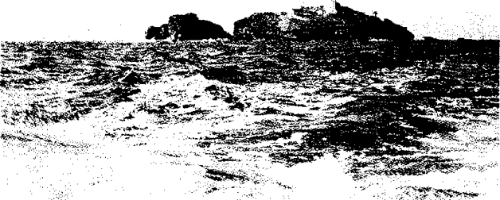
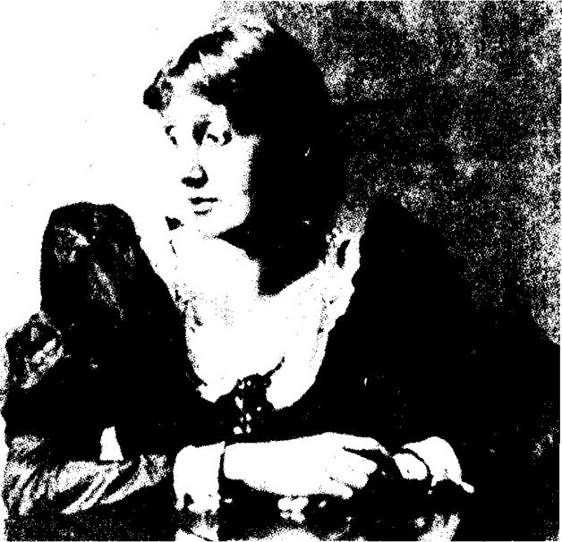

Bölüm 13
To the Lighthouse
1927’de yayınlanan To the Lighthouse, Virginia Woolf’un en ünlü ve bize kalırsa en güzel romanıdır. Eşi Leonard Woolf’un “a psychological poem” (ruhbilimsel bir şiir) diye tanımladığı bu romanda, yazar, kendini değil de, çocukluk anılarına dayanarak annesiyle babasını anlattığı için, onun otobiyografik sayılabilecek tek kitabıdır bu. Virginia Woolf’un, fazla zorlanmadan, fazla sıkıntı çekmeden rahatça yazdığını söylediği ve özellikle sevdiği bu kitabında, çoktan ölen annesiyle babasını andığından, To the Lighthouse’a roman yerine “an elegy” (bir ağıt) demeyi düşünmüştü bir ara. To The Lighthouse bir ağıttır gerçekten de; annesine, babasına, çocukluğuna yakılan bir ağıt. Amacının, annesinin ve babasının kişiliğini tam olarak vermek, St. Ives’daki çocukluk günlerini, yaşamı ve ölümü anlatmak olduğunu söyler. Yazar bu amacını büyük bir başarıyla gerçekleştirdi. Yaşamı da anlattı, ölümü de. Annesiyle babasını ise, Jacob’s Room’daki kişiler gibi, rengârenk sisler arasından hayal meyal göstermedi. Hattâ onları öyle net ve öyle gerçek yaptı ki, elimizi uzatsak, onlara dokunabiliriz sanki.
Stephen ailesi, her yıl yaz aylarında, Comwall kıyılarındaki St. Ives’a giderdi. Ama roman, St. Ives’da değil de, İskoçya sahillerinin açıklarında, Hebrides adalarından birinde geçer. Romanın ancak bir tek yerinde de, bu adanın adının Isle of Skye olduğu söylenir. Yazar, denize çok yakın, her bir yanı denizle çevrili bir yerin, kitabının havasına daha uygun olacağını düşünmüştü herhalde. Çünkü To the Lighthouse’u yazmaya başladığı sırada, 1925 güncesinde, denizin sesinin bütün roman boyunca hep duyulacağını söyler. To the Lighthouse’da deniz, romanın önemli tema’larından birini, yaşamın ve zamanın akışını ve sürekli değişimlerini simgeler. Romanın baş kişisi Mrs. Ramsay, denizin sesini, kimi zaman ona huzur veren tatlı bir ninniye; kimi zaman da ölümün yaklaştığını bildiren davulların korkunç gümbürtüsüne benzetir. Bu davul seslerinin, yalnız kendisi gibi ölümlü insanların yok olacağını değil, oturdukları bu adanın bile denizin dibine batıp yok olacağını haber verdiğini düşünür.
Romana adını verecek kadar önemli olan deniz feneri, romanın başlıca simgesidir. Stephen’ların yazları oturdukları St. Ives’da da bir deniz feneri varmış ve ne ilginçtir ki, Virginia Woolf, daha on yaşındayken kaleme aldığı bir yazıda, onu derinden etkileyen bu fenerden söz eder. Kardeşi Adrian’ın (To the Lighthouse’daki küçük James) en büyük düşkırıklıklarından birinin o fenere gidememek olduğunu söyler. Romandaki deniz fenerinin tam şunu ya da tam bunu simgelediğini söylemek doğru olmaz. Değişik yorumları olabilecek bir simgeyi sınırlayıp güdükleştirmememek gerek. Virginia Woolf, deniz feneriyle tam ne demek istediğini soran yakın arkadaşı Roger Fry’a bir mektubunda, “I meant nothing” (hiçbir şey demek istemedim) diye kesip atar ve bunu söylerken ne denli ciddi olduğunu vurgulamak istercesine, bu tümcenin altını özenle çizer. Sonra da, “Directly I am told what a thing means, it becomes hateful to me” (Bir şeyin ne anlama geldiği bana söyler söylenmez, o şeyden nefret ederim) diye ekler. To the Lighthouse’da da, “Nothing was simply one thing” (Hiçbir şey sadece bir tek şey değildir) diye yazar. Ramsay ailesinin en küçük oğlu James, çocukluğunda deniz fenerini, akşamları sarı gözlerini açan, sisler arasında, gümüşümsü bir kule olarak görür. On yıl sonra deniz fenerine gittiklerinde, bir de bakar ki, beyaz badanalı, sağlam bir yapıdır. Gerçek deniz fenerinin hangisi olduğunu sorar kendi kendine ve o zaman bu iki değişik görüntünün ikisinin de gerçek deniz feneri olduğunu anlar. Çünkü “hiçbir şey sadece bir tek şey değildir.” Kaldı ki, bir şey sadece bir tek şeyi temsil edince, ona “symbol” yani simge değil, “allegory” yani remiz demek gerekir.
Virginia Woolf’un deniz fenerini kullanarak hiçbir şey demek istemediğini ileri sürmesine karşın, bunun bir simge, hem de çok önemli bir simge olduğunu bilen eleştirmenler, değişik yorumlar yapmışlardır bu konuda. Örneğin, Elizabeth Drew’ya bakılacak olursa, yaşam ve zaman denizinin ortasında, karanlıkları aydınlatmak için insanlarca gösterilen çabanın bir simgesidir deniz feneri. Joan Bennett’e göre, fenerin yanıp sönen ışığı, insan yaşamında birbirini hızla izleyen sevinçlerle acıların, insan ilişkilerinde aydınlık ve karanlık anların bir simgesidir. Birçok başka yorum da yapılabilir. Örneğin, deniz fenerinin fırtınalar arasında hiç sarsılmadan duran, kaybolanlara yol gösteren, karanlıkları aydınlatan sevgiyi simgelediği söylenebilir. Ama bu romanı duyarlılıkla okuyan herkesin aklına hemen gelen ilk yorum, deniz fenerinin Mrs. Ramsay’yi simgelediğidir. Çünkü Mrs. Ramsay, hem çevresine hoşgörü ve anlayışla dolu bir sevginin ışığını saçar; hem de bu ışık sayesinde, herkesin aklından geçenleri bilir:
“Her eyes were so clear that they seemed to go round the table unveiling each of these people, and their thoughts, and their feelings, without effort like a light.”
(Öyle açık seçik gören gözleri vardı ki, hiçbir çaba göstermeden, bir ışık gibi, sofranın çevresinde sanki dolanır; oradaki insanların üstündeki örtüleri kaldırır, düşüncelerini ve duygularını görürdü.)
Mrs. Ramsay, alacakaranlıkta yeni yanan fenere bakınca, “kendi gözlerinin, kendi gözleriyle karşılaştığını sanır” (“it seemed to her like her own eyes, meeting her own eyes”). Virginia Woolf’un, başkişisini deniz feneriyle özdeşleştirdiği, bu alıntılardan da besbellidir.
Mrs. Dalloway’den bir hayli daha uzun olan To the Lighthouse, birincisi aşağı yukarı 150 sayfa, ikincisi ancak 20 sayfa, üçüncüsü de aşağı yukarı 70 sayfa tutan üç kısma ayrılır. “The Window” (Pencere) adlı ilk kısımda 19 bölüm, “Time Passes” (Zaman Geçiyor) adlı ikinci kısımda 10 bölüm, “The Lighthouse” (Deniz Feneri) adlı üçüncü kısımda 13 bölüm vardır. Bu bölümler, aynı uzunlukta değildir. Kimileri ancak bir tek paragraftan, hattâ bir tek tümceden oluşur. Birinci kısım, öğleden sonra başlayıp geceye kadar sürer. Bir Eylül gününün ikinci yarısı anlatılır. İkinci kısımda, on yıllık bir süreye çok kısa değinilir. On yıl sonra geçen üçüncü kısımda ise, sabahtan öğleye kadar, tam gün bile sayılmayacak bir zaman dilimi ele alınır. Bize kalırsa, Virginia Woolf’un bütün romanları arasında en kusursuz yapı To the Lighthouse’inkidir. Bu yapı, Joan Bennett’e, yanıp sönerken deniz fenerinin ışığını anımsattı. Çünkü fenerin ilk ışığı uzundur; sonra bir süre kararır; sonra kısa süren bir ışık daha verir. Yani bir karanlığın ikiye böldüğü, iki kısa, bir de uzun üç ışıktır. Birinci kısım uzun ışığa benzer; ikinci kısım bir saniyelik karanlığa, üçüncü kısım da kısa ışığa benzer.
To the Lighthouse’da bir öykü anlatılmaz. Olup bitenlerden bile söz edemeyiz. Çünkü Mrs. Dalloway’de Septimus Warren Smith’in kendini öldürmesi gibi çarpıcı bir olay da yoktur burada. Olay sayılabilecek tek şey, romanda hiç de önemli roller oynamayan Minta ile Paul’un nişanlanmalarıdır. Hiçbir olay olmamasının nedeni de besbellidir. Çünkü yazarın amacı, kişilerin iç dünyalarını aydınlatmak, akıllarından geçenleri bize aktarmaktır. Peki, bu kişilerin dış dünyalarında neler oluyor diye sorarsanız, ancak şu kadarını söyleyebiliriz: Mrs. Ramsay, bahçesine bakan pencerede oturur, deniz feneri bekçisinin oğluna armağan edilecek kahverengi çorapları örer. En büyük isteği ertesi gün deniz fenerine gitmek olan altı yaşındaki James, annesinin dizinin dibinde renkli bir katalogdan resimler keser. Mr. Ramsay, bazı dizeleri yüksek sesle kendi kendine söyleyerek, bahçede bir aşağı bir yukarı yürür. Ressam Lily Briscoe bir tablo yapar. Yaşlı şair Mr. Carmichael, bir bahçe koltuğunda uyuklar. Akşama doğru, Mrs. Ramsay ile evin genç konuklarından Charles. Tansley kasabaya kadar giderler. Ramsay ailesinin çocukları bahçede oynar. Konuklar kumsalda yürür. Gece birlikte akşam yemeği yenilir. İkinci kısımda, Mrs. Ramsay’nin ve ailenin bir oğluyla bir kızının öldüğü haber verilir kısaca. Üçüncü bölümde ise Lily Briscoe tablosunu bitirir. Mr. Ramsay, oğlu James ve kızı Cam ile deniz fenerine gider.
To the Lighthouse’ın asıl özünü romandaki insanlar oluşturur ve bunların ne yaptıkları değil, ne oldukları önemlidir. Bu insanları ele almadan önce, eskiden oturdukları boş yazlık evin anlatıldığı ikinci kısmı kısaca ele alalım. “Time Passes” de bu insanlar bulunmadığı için, kitabın en zayıf kısmı sayılır. Güncesinden anlaşıldığı gibi, Virginia Woolf da çok zorlanmıştı bu yirmi küsur sayfayı yazarken: “I have to give an empty house; no people in it, no charac-ters; the passage of time” (Boş bir evi anlatmam gerek; içinde insan yok, kişiler yok; zamanın geçişini vermem gerek) diye yakınır.
On yıldır kimsenin ayak basmadığı ev, kıyıya vurmuş, içi kum dolu bir deniz kabuğuna dönüşmüştür. Kilerin tahta kapılarından devedikenleri çıkmaktadır. Rutubet bütün odalarda ahşabı çürütmüştür. Oturma odasında kırlangıçlar yuva kurmuştur. Evin çoktan ölen hanımının, her şeyi koruyan, her şeyi düzenleyen eli ortadan çekildiği için, “geceler artık rüzgârla dolu, yıkıntıyla doludur” (“the nights are full of wind and destruction”). Mrs. Ramsay’nin varlığı, onu simgeleyen deniz fenerinin ışığının, geceleri boş evin içini aydınlatmasıyla duyumsanır ancak. Karanlık basınca, deniz fenerinin ışığı mehtapla karışır, usul usul odaya girer; her şeye sevgiyle dokunur, sevgiyle bakar sanki.
Mrs. Ramsay’nin ne zaman, neden öldüğünü bilmeyiz. Virginia Woolf, ayraç içinde bir tek tümce yazmakla yetinir bu konuda:
“Mr. Ramsay, stumbling along a passage one dark night, stretched his arms out, but Mrs. Ramsay having died rather suddenly the night before, his arms though stretched out, remained empty.”
(Mr. Ramsay, bir karanlık gece, koridorda tökezleyerek, kollarını uzattı; ama Mrs. Ramsay bir gece önce ansızın öldüğü için, uzatılmış oldukları halde, kolları boş kaldı.)
Bu tümce ayrıca anlamlıdır; çünkü ileride bu çiftin ilişkisini ele alınca, Mr. Ramsay’nin bedenen değil ama, ruhsal olarak hep tökezlediğini; eşinin ise, her zaman sevgiyle kollarını uzatıp, onu düşmekten kurtardığını göreceğiz. Mrs. Ramsay’nin ölümü, ayraç içinde kısaca verildiği gibi, romanın öteki kişileriyle ilgili haberler de, böyle kısaca ve gene ayraç içinde verilir. Örneğin, Ramsay’lerin kızlarından biri olan Prue, evlenmiş ve çocuk doğururken ölmüş. Savaştan sonra okuyucuların şiire ilgisi arttığından, Mr. Carmicha-el’in son kitabı çok beğenilmiş. Paul ile Minta’nın evliliği bir ara bozulur gibi olmuş. Ramsay’lerin oğullarından biri olan Andrew, Birinci Dünya Savaşında Fransa’da ölmüş; vurulur vurulmaz öldüğünden, iyi ki, fazla acı çekmemiş. İkinci kısmın sonunda iki temizlikçi kadının terk edilmiş evi, süpürüp silmelerinden, aileden birilerinin, gene Eylül ayında ve on yıllık bir aradan sonra, yazlıklarına geleceklerini anlarız.
Virginia Woolf’un, on dört yaşındayken yitirdiği sevgili annesi Julia Stephen’ı, Mrs. Ramsay’nin kişiliğinde yeniden canlandırmak istediğini biliyoruz ve bunu öyle bir başarıyla yaptı ki, ablası Vanessa Bell, To the Lighthouse’ı okurken heyecandan kendinden geçti, bir ölünün böyle dirilmesi karşısında, nerdeyse dehşete kapıldı. Vanessa, kız kardeşine bir mektubunda, annelerinin kişiliğinin olağanüstü güzelliğini okuyuculara hissettirmenin, herhalde dünyanın en güç işi olduğunu da söyledi. Virginia Woolf, bunu yapmayı başarmıştı.
Julia Stephen’ın ve onun portresi Mrs. Ramsay’nin olağanüstü kadınlar sayılmaları için hiçbir neden yoktur aslında. Mrs. Ramsay, elli yaşlarında, saçları kırlaşmaya başlamış, az parayla sekiz çocuğa bakan, boş vakitlerinde yün ören, sessiz sedasız bir ev hanımıdır. Bir aydın değildir. Ne Virginia gibi yazı yazar, ne de Vanessa gibi resim yapar. Onun olağanüstülüğü bencillikten tümüyle arınmış bir kadın olmasından ileri gelir. İnsanları, gösterişsiz, ama sıcak bir sevgiyle sever, onlarla özdeşleşebilir. Romanın hemen başlangıcında anlariz sevecenliğini: Mrs. Ramsay, penceresinde oturup, deniz feneri bekçisinin oğluna verilecek çorapları örerken, o ailenin yaşamının ne denli güç olduğunu düşünür. Fırtınalı havalarda, haftalarca, kimi zaman aylarca, karaya çıkamadan, küçücük bir alanda kapalı kalırlar. Dalgalar onları denize süpürür korkusuyla, fenerin dışına bile çıkamadıkları günler olur. Fener bekçiliği gibi güç işlerde çalışanların, yoksulların, yakınlarını yitirenlerin ya da hastaların durumu, sürekli bir derttir Mrs. Ramsay için. Şimdi bulunduğu adada da, Londra’da da, bunca ev işi olduğu halde, William Bankes’in deyişiyle “felsefe hocalığıyla sekiz çocuk beslemek” (“to feed eight children on philosophy”) güç bir iş olduğu halde, sorunu olanları görmeye gider, onlara yardım etmek için elinden geleni yapar. Ama bunları yaparken, alışılagelmiş “hayırsever bayan” tipinden tamamiyle farklı olduğu besbellidir.
Mrs. Ramsay, insanları yalnız sevmekle kalmaz; çok daha zor bir işi başarır; insanlar arasında sevgi bağları kurarak, onların birbirilerini sevmelerini de sağlar. Örneğin, Lily Briscoe, Charles Tansley’den hiç mi hiç hoşlanmaz. Hoşlanması için de bir neden yoktur. Çünkü Tansley, yoksulluk ayıp bir şeymiş gibi, aşağı sınıftan gelmenin kompleksi içinde kıvranır; herkesi, özellikle kadınları hor görür; Lily’nin resim yapmaya çalıştığını bildiği halde, ikide birde “kadınlar yazı yazamaz, kadınlar resim yapamaz” (“women can’t write, women can’t paint”) der. Tansley, sürekli öfke içinde yaşayan, bilgili ama çok sevimsiz bir delikanlıdır. Bu sevimsizliği yüzünden, Mrs. Ramsay ona ayrıca yakınlık gösterir, onu ayrıca korur. Öfkesinden hoşlandığını söyler ve ne yapıp yapıp, Charles Tansley’i de sevmenin yolunu bulur.
Günün birinde Mrs. Ramsay, boyuna kavga eden Lily ile Tansley’i de yanına alıp, kumsala gider. Bir kayanın dibinde oturup, dizlerinin üstünde mektup yazar. Hiçbir şey söylemez, hiçbir şey yapmaz. Ne var ki, Mrs. Ramsay’nin orada, yanlarında bulunmasının gizemli etkisiyle, Lily ile Tansley arasında garip bir dostluk doğar. Yassı siyah çakıl taşlarını denizin üstünde kaydırırlar, çocuklar gibi eğlenirler. Mrs. Ramsay, okuma gözlüğünü alnına kaldırarak, onların haline güler. Üçüncü kısımda, aradan on yıl geçtikten sonra, o an Charles Tansley’ye ne denli yakınlık duyduğunu, ne denli mutlu olduğunu anımsayan Lily Briscoe, bu yakınlıkla mutluluğu yaratanın Mrs. Ramsay olduğunu bilir. Mrs. Ramsay, insanları garezlerinden, önyargılarından sanki arındırıyor, “her şeyi çözümleyip sadeliğe kavuşturuyor” (“resolved everything into simplicity”), çevresindeki kopuklukları bütünleştiriyor, yıllarca sonra anımsanan mutluluk anları yaratıyordur. “Nerdeyse bir sanat eseridir” (“almost like a work of art”) onun bu yaptığı. Lily Briscoe’nun “sanat eseri” deyişi doğrudur. Çünkü böyle bir iddiada bulunmak aklının kenarından geçmediği halde, Mrs. Ramsay, insanların sürtüşmelerine neden olan pürüzleri törpüleyen, yaşamı biçimlendiren, güzelleştiren bir sanatçı gibidir. “İnsan ilişkilerinin aşırı karanlığını bilir” (“the extreme obscurity of human relationships”) ve kendisini simgeleyen deniz feneri gibi, bu aşırı karanlığı aydınlığa kavuşturmaya çalışır. Hiç yargılanmayacaklarını, hiç ayıplanmayacaklarını bildiklerinden, herkes ona içini dökebilir, onun önünde rahat rahat ağlayabilir.
Mrs. Ramsay’nin iç dünyası ne denli güzelse, dış görünüşü de o denli güzeldir. Romanın kişilerinden William Bankes’ın dediği gibi, bir çocuk kendi güzelliğinin hiç farkında olmadığı gibi, o da farkında değildir güzelliğinin. Hattâ herkes gibi olmak ister; güzelliğinden söz edilince üzülür. Ama bunu istese de istemese de, “güzelliğinin meşalesini” (“the torch of her beauty”) hep taşımak zorundadır ve bu meşalenin alevi, onu görenlerin gözünü kamaştırır.
Demin söylediğimiz gibi, hiç kimseler onu sevmediği için, Charles Tansley’ye özellikle yakınlık gösteren Mrs. Ramsay, kendisiyle birlikte yürümesini önerir delikanlıya. Yolda giderken, Charles Tansley ansızın olağanüstü bir heyecana kapılır. Bu heyecanın Mrs. Ramsay’nin güzelliğinden kaynaklandığını anlar. Hiç de şiirsel denilebilecek bir adam olmadığı halde, en şiirsel, en coşkulu sözler gelir aklına:
“She was the most beautiful person he had ever seen with stars in her eyes and veils in her hair, with cyclamens and wild violets... What nonsense he was thinking. She was fifty at least; she had eight children -stepping through fields of flowers and taking to her breast buds that had broken and lambs that had fallen, with the stars in her eyes and the wind in her hair.”
(Görüp göreceği en güzel insandı o. Gözlerinde yıldızlarla, saçlarında tüllerle, siklamenlerle ve yaban menekşelerle- neydi bu düşündüğü saçmalıklar? En azından elli yaşındaydı o, sekiz çocuğu vardı- çiçek tarlalarında yürüyordu, kırılan tomurcukları ve düşen kuzuları bağrına basıyordu, gözlerinde yıldızlarla, saçlarında rüzgârla.)
Mrs. Ramsay dindar değildir. Gerçi birara “We are all in the hands of the Lord” (“Hepimiz Tanrının elindeyiz”) der. Ama bu, düşünmeden söylenilen otomatik bir sözdür; en dinsiz kişilerin “Allah korusun” dedikleri gibi. Çünkü bu sözün hemen arkasından, böyle bir dünyayı Tanrı’nın nasıl yaratabileceğini sorar kendi kendine. Güzel huylu insanların çoğu gibi, dünyayı toz pembe de görmez. Yeryüzünde kötülüğün olduğunu bilir:
“There is no reason, order, justice, but suffering, death, the poor. There was no treachery too base for the world to commit; she knew that. No happiness lasted; she knew that.”
(Akıl, düzen, adalet yoktu; ama acı çekmek vardı, ölüm vardı, yoksullar vardı. İnsanların yapamayacakları kadar aşağı bir hainlik yoktu dünyada; bunu biliyordu. Hiçbir mutluluk sürmezdi; bunu biliyordu.)
Mrs. Ramsay bunları bilir; çünkü onda “hem bilgi hem de bilgelik” (“knowledge and wisdom”) vardır. Köşesinde sessiz sessiz oturur; “kafası eğitilmemiştir” (“untrained mind”). Ama “öğrenmeden bilir. Onun sadeliği, zeki insanların yanlış anladığı şeylerin derinliklerini iskandil edebilir” (“She knew without learning. Her simplicity fathomed what clever people falsified”).
Mrs. Ramsay öyle dürüsttür ki, kendi iyiliği konusunda kuşkulara düştüğü olur. Acaba beğenilmek için mi herkese bu kadar sevgi veriyor, bu kadar yardım ediyor diye sorgular kendini. Oysa bu kuşkular yersizdir. Çünkü küçük oğlu James’in dediği gibi, o “pembe çiçekli bir meyva ağacıdır” (“a rosy-flowered fruit tree”) ve ağaçların meyvalarını verdikleri doğallıkla sevgisini verir çevresindekilere. Çevresindekiler ise, sevgi ve hayranlık duyarlar Mrs. Ramsay’ye.

Hakiki Lighthouse: St. Ives’daki Godfrey deniz feneri.
Örneğin, kızı Prue, yeryüzünde annesine benzer başka bir insan bulunamayacağına emindir. Oğlu James, gerçeği ancak annesinin söylediğine ve gerçeğin ancak annesine söylenebileceğine inanır. William Bankes’ın gözünde, Mrs. Ramsay en doğru anlamda uygarlığı simgeler. Onun gibi bir insanın var olduğu yerde, ne barbarlık kalır ne de kargaşa. Bu altmış yaşında adamın hayranlığına aşk da karışır: “Distilled and filtered love that never attempted to clutch its object” (Sevdiğini hiçbir zaman yakalayıp tutmaya kalkmayacak, imbikten geçmiş ve süzülmüş bir aşk.) Lily Briscoe da, William Bankes’ın ve Charles Tansley’nin duyduğu hayranlığı paylaşır; o da âşık gibidir Mrs. Ramsay’ye. Mrs. Ramsay’nin hiç kimseyi zorlamadan, herkese her istediğini yaptırabileceğine, onda şaşırtıcı bir güç olduğuna inanır: “Do this, she said, and one did it” (Şunu yap derdi ve insan onun istediğini yapardı) diye düşünür.
Lily Briscoe, Mrs. Ramsey’de “perfect goodness” (kusursuz bir iyilik) görür. Böylesine kusursuz insanları bir edebiyat yapıtında canlandırmak, dünyanın en güç işi, nerdeyse olanaksız bir iştir. Bildiğimiz kadarıyla ancak Dostoyevski Budala’da Prens Mişkin ile bunu başarabilmiş, hem kusursuz, hem de “gerçek” bir insan yapabilmiştir. Virginia Woolf, belki bu yüzden, yani Mrs. Ramsay’yi bir ermiş olmaktan kurtarıp bir insan yapabilmek için, ona bir iki küçük kusur verir. Bunlardan biri, çevresindekileri evlendirmek merakıdır. Mrs. Ramsay, Lily Briscoe ile William Bankes’ı evlendirmek ister; bunu başaramaz. Ama Minta ile Paul’u evlendirmeyi başarır. Lily ile Bankes’ın birleşmelerinin olanaksızlığını; Minta ile Paul’un evliliğinin çok mutlu olmayabileceğini hiç hesaba katmaz. Bu genç çiftin nişanlandıkları gün, Mrs. Ramsay’nin küçük bir kusuru daha ortaya çıkar: Minta’nın bütün güzelliği üstündedir o akşam. Mr. Ramsay de bu güzelliğin farkına varınca, eşi, artık hiçbir zaman duymayacağını sandığı bir duyguya kapılır, bu genç kızı kıskanır bir an için.
To the Lighthouse’un birinci kısmından on yıl sonra geçen ve kimi eleştirmenlere göre, içinde Mrs. Ramsay bulunmadığı için birinci kısım kadar güzel olmayan üçüncü kısımda, başkişi çoktan öldüğü halde, varlığı her an hissedilir; hattâ onu sevenlerin bilincinde, yaşarken olduğundan bile daha canlıdır belki de.
Romanda Mrs. Ramsay’nin sadeliğinden, hattâ bir çocuk gibi saf olduğundan hep söz edilir. Lily Briscoe, sofrasının başında oturan ev sahibesini bir çocuğa benzetir. Yalnız saf değil, bir çocuk kadar “saçma” (“absurd”) bulur onu. Ne var ki, böylesine sade, böylesine düpedüz görünen bu kadının, bilmediğimiz yanları olabileceğini sezinlediğimiz anlar da olur. Örneğin, neden susuverir, neden yalnız olmak ister kimi zaman? Neden ansızın hüzün görülür yüzünde, gözlerinde neden yaşlar birikir? Yakınları, bu görkemli güzelliğin arkasında neler olduğunu, onun gençlik günlerini merak ederler. Çok soylu ve kadınlarının çekiciliğiyle ünlü bir İtalyan ailesi vaktiyle İngiltere’ye yerleşmiş. Mrs. Ramsay bu ailenin soyundanmış. Gençliğinde, biri, ona deliler gibi âşık olmuş. Bir söylentiye göre, Ramsay ile evlenmesinden bir hafta önce, beynine bir kurşun sıkıp kendini öldürmüş. Yazar, bu söylentilere kısaca değinip geçer; ama bunlar sayesinde başkişisini saran bir gizem havası yaratır. Böylece, başkalarının onunla ilgili izlenimleri hep verildiği ve Mrs. Ramsay’nin aklından geçenler bizlere hep aktarıldığı halde, To the Lighthouse’un başkişisi, bazı açılardan çözümlenemeyen bir giz olarak kalır düşgücümüzde. Bu konuya ilk değinen eleştirmen, yarım yüzyıl önce İstanbul Üniversitesi Edebiyat Fakültesinde çok sevdiğimiz hocamız olan ve Batı edebiyatında gerçekçilik konusunu ele alarak Mimesis adlı çok değerli incelemeyi yazan Profesör Erich Auerbach’dır. Mrs. Ramsay’nin bilemediğimiz, çözümleyemediğimiz yanlarının bulunması, onun ne denli “gerçek” olduğunun bir kanıtıdır bize kalırsa. Çünkü romanlarda ya da tiyatro oyunlarında gördüğümüz kişileri, çok çapraşık olsalar da, saptayabiliriz genellikle. Oysa gerçek yaşamda, en yakından tanıdıklarımız bile, olumlu ya da olumsuz olarak, bizi hayrete düşürebilirler günün birinde. Hattâ öyle büyük bir hayrete düşürebilirler ki, biz bu insanı sahiden tanıyor muyuz diye sorarız kendi kendimize.
Güncesinden anlaşıldığı gibi, Virginia Woolf, annesini değil, babasını To the Lighthouse’un baş kişisi yapmak niyetindeydi:
“The centre is father’s character, sitting in a boat reciting we perished each alone, while he crushes a dying mackerel”
(Kitabın odağında babamın kişiliği. Sandalda oturmuş, bir yandan “her birimiz yalnız öldük” dizesini okurken, bir yandan da can çekişen bir uskumruyu ezmekte.)
Gerçi Mr. Ramsay To The Lighthouse’da can çekişen bir uskumruyu ezmez. Ama bütün roman boyunca çok sevdiği çocuklarını istemeye istemeye ezer ve o dizeyi de, yüksek sesle kendi kendine söyleyip durur.
Mr. Ramsay’nin kişiliği, romanın hemen başında anlaşılır: Altı yaşındaki James (ileride bir hayli ünlü bir pisikiyatrist olan Adrian Stephen) örgü ören annesinin dizinin dibinde oturmuş, bir katalogdan resimler kesmektedir. Deniz fenerine gitmek, bir tutku haline gelmiştir bu küçük çocukta. Annesi, hava güzel olursa, elbette oraya gideceğini söyleyerek onu avuturken; babası, havanın mutlaka kötü olacağını, deniz fenerine gidemeyeceğini söyler. Haklıdır da; çünkü pencereden bakınca, havanın ertesi gün kötü olacağını anlamıştır. Ne var ki, çocuğu idare edebilir; havanın kötü olacağını böyle kesinlikle açıklamayabilir; Mrs. Ramsay gibi, havanın belki de güzel olacağını söyleyebilirdi. Ama bunu yapacağına, acımasızca mantığını kullanarak, “oğlunu düş kırıklığına uğratmak, eşini gülünç duruma düşürmek hazzından” (“ the pleasure of disillisioning his son and casting ridicule upon his wife”) kendini yoksun edemez. Ahlâksal ilkeleri uğruna böyle konuşmaktadır üstelik: Gerçekleri herkese, özellikle kendi çocuklarına, her zaman açıkça söylemesi gerekmektedir. Çocukları, daha küçükken anlamalıdırlar yaşamın ne denli güç olduğunu. Acılara dayanabilecek cesareti ve gücü, bir an önce elde etmelidirler.
Küçük James, deniz fenerine gidemeyeceklerini söyleyen babasına öyle bir kin duyar ki, eline bir balta ya da herhangi bir demir parçası geçirebilse, onu hemen o an öldürebilir. Virginia Woolf, yazar olarak söze karışmaktan, yorumlar yapmaktan her zaman kaçındığı ve yalnız kişilerinin aklından geçenleri ya da başkalarının onlarla ilgili sözlerini aktarmakla yetindiği halde, burada alaycı bir yorum yapmaktan kendini alamaz; Mr. Ramsay’nin, çocuklarında, işte böyle “aşırıya kaçan heyecanlar” (“extremes of emotions”) uyandırdığını söyler. Küçük James, annesiyle ilişkilerinin o güzel huzurunu bozmakla da suçlar babasını. Bu adam, annesiyle kendisi arasına “bir kılıç” (“scimitar”) gibi girer. Çünkü Mr. Ramsay, eşinin ona merhamet etmesini, yakınlık göstermesini her an istemektedir: “There he stood demanding sympathy... He was a failure he said” (Orada duruyor, yakınlık istiyordu... Başarısız bir adam olduğunu söylüyordu.) Küçük James, babasının sürekli baskılarına karşı savaşmaya kararlıdır:
“That he would fight, that he would track down and stamp out -tyranny, despotism he called it- making people do what they did not want to do, cutting off their right to speak”
(Buna karşı savaşacaktı; bunun peşini bırakmayacak, bunu ayaklarının altında ezecekti -zorbalık, despotluk diyordu buna- insanlara yapmak istemediklerini yaptırmak, onlara söz hakkı vermemek. )
Yalnız küçük James değil, Ramsay’lerin aile dostu Lily Briscoe da, yazarın kendi babasına karşı tepkilerinin sözcülüğünü ederek, böyle bir adamın egemen olduğu evde, sürekli baskı altında yaşamanın, çocuklar için “bir tragedya olduğunu” (“this was tragedy”) söyler.
Leonard Woolf’a bakılacak olursa, Virginia, Mr. Ramsay’nin kişiliğinde kendi babasını böyle acımasızca eleştirmekle bir hayli haksızlık etmişti ona. Yazarın yaşamını anlatırken yeterince değindiğimiz bir konuyu, bir kez daha ele almak istemiyoruz. Ama Virginia Woolf’un, Mr. Ramsay’yi meslek yaşamında başarısız bir adam olarak göstermekle, babasına haksızlık ettiği hiç kuşku götürmez: Mr. Ramsay, Oxford’larda, Cambridge’lerde değil, bir taşra üniversitesinde felsefe hocasıdır. Yirmi beş yaşındayken, çok önemli bir felsefe kitabı yazmış; ama ondan sonra, küçük eklemelerle bu kitabı yinelemekten başka bir şey yapamadığı için, kendisine bağlanan umutlar boşa çıkmıştır. Mr. Ramsay’nin görkemli bir beyni olduğundan sürekli söz edilir. Ne var ki, bu sözde görkemli beyin bütün alfabeyi kapsayamamış, “Q” harfine takılıp kalmıştır. İngiltere’de çoğunun beyni “Q” harfine erişemediği için, bir süre çok büyük bir felsefeci sayılmış; ama “Q” harfini aşıp “R” harfine varamadığından, bir dâhi olmadığı meydana çıkmıştır. Mr. Ramsay, “R” harfine aslâ varamayacağının bilincinde olduğu için, aşağılık kompleksleri içinde kıvranır, kendine acır ve kendini dramatize ederek bu acıları bir tragedyaya dönüştürür. Deniz kıyılarında, “like a desolate sea-bird, alone” (ıstırap içinde bir deniz kuşu gibi, yapayalnız) durur. Ama bir yandan acılarını gözler önüne sererken, bir yandan da stoik pozlar takınır, bu acılarını sözde gizlemeye çalışır; aslâ yılmayacağını herkesin bilmesini ister:
“Yet he would not die lying down; he would find some crag of rock, and there, his eyes fixed on the storm, trying to the end to pierce the darkness, he would die standing.”
(Ama gene de, yere serilerek ölmeyecekti; kayada bir çıkıntı bulacak; orada gözlerini fırtınaya dikerek, karanlığı delmeye sonuna değin uğraşarak, ayakta ölecekti.)
Mr. Ramsay’nin, bir aşağı bir yukarı yürürken, sesini alçaltıp yükselterek, kimi zaman da düpedüz bağırıp çağırıp elini kolunu sallayarak şiir okuma alışkanlığı vardır. Bu alışkanlık, içindeki fırtınaları yansıtır. Mrs. Ramsay, evlerindeki konuklar eşinin bu hallerini görecekler diye çok üzülür. Bunu ıssız yerlerde değil de, kendi evinin bahçesinde yaptığından, görmemelerinin de pek yolu yoktur. Ama onu hiç görmüyor, duymuyor gibi yaparlar. Lily Briscoe, Mr. Ramsay’nin bu huyunu hem gülünç hem de ürkütücü bulur. Mr. Ramsay’nin trajik bir sesle ikide birde yinelediği iki dize vardır: “We perished each alone” (Her birimiz tek başına öldük) ve “someone had blundered” (Birileri yanlış bir iş yapmıştı.) Birinci dize, William Cowper’in (1731-1800) “The Castaway”sinden (Denize Atılan Adam), ikincisi de Lord Alfred Tennyson’un (1809-1893) “The Charge of the Light Brigade”inden (Hafif Süvari Alayının Hücumu) alınmıştır. Birinci şiirde, denize atılan bir adamın kapkaranlık fırtınalı bir okyanusta ölümü; ikincisinde de, Kırım savaşı sırasında, Balaklava’da verilen emrin yanlış olduğunu bile bile, altı yüz atlının ölüme katlanmaları anlatılır. 1
Mrs. Ramsay, kocasının bu davranışının, Lily Briscoe’nun da dediği gibi, hem gülünç, hem de tedirgin edici olduğunu bilir. Onun aşağılık komplekslerinin, bencilliğinin, kusurlu ya da eksik yanlarının da bilincindedir. Kendisi, olanca duyarlılığıyla, insanlarla ve yeryüzünün bütün güzel yanlarıyla tam bir iletişim içindeyken; Mr. Ramsay’nin kendi iç dünyasına kapanmış, başka insanların ve dış dünyanın farkında bile olmadığını da bilir. Üstelik, Mr. Ramsay’nin, karısına çok haşin davrandığı anlar da olur. Örneğin, romanın başlangıcında, Mrs. Ramsay, küçük James’in üzülmemesi için, ertesi gün havanın belki güzel olacağını, deniz fenerine belki gidebileceğini söyleyince, kocası, öfkeden ter ter tepinerek, “damn you!” (Allah seni kahretsin!) diye bağırır. Ama bu kabalığından hemen pişman olur. Eğer karısı isterse, hava konusunda Sahil Koruma memurlarına danışabileceğini söyler. Karısının ona kızmadığını anlayınca da, bahçeye çıkıp, “birileri yanlış yapmıştı” dizesini söyler kendi kendine. Ama bu dizeyi söylerken, sesinde her zamanki mutsuz tını olmadığından, Mrs. Ramsay, bağışlandığını anlayıp, kocasının kendi iç dünyasına geri döndüğünü bilir.
Ramsay, bu iç dünyanın kapısını ancak karısına açtığı için, Mrs. Ramsay, güçlü görünmek isteyen, ama aslında ne denli güçsüz olduğunu bildiği, ona muhtaç bu adamı sürekli avutur, ona sürekli güven verir. Ramsay ise, karısının olağanüstü sevecenliğini ve hoşgörüsünü sürekli sömürür. Üstelik, Mrs. Ramsay kocasını korurken, sanki kocası onu koruyormuş gibi yapmaya özen gösterir. Mrs. Ramsay’yi taparcasına seven Lily Briscoe, bunun farkındadır. Gerçi Lily, Ramsay’nin küçük ve bayağı yanları olmadığını, gerçekten acı çektiğini bilir. Ama gene acımasızdır ona karşı: Ramsay bencildir, kendini beğenmiştir, şımarıktır, zorbadır; karısını ölesiye yıpratmaktadır. O “Hiçbir zaman vermez; o adam alır sadece. Mrs. Ramsay vermişti. Vere vere ölmüştü”. (“Never gave; that man took. Mrs. Ramsay had given. Giving, giving, she had died”).
Mrs. Ramsay’nin salt melek huylu olduğu için kocasına bu kadar sevecen davrandığını sanmak bir yanılgı olur. Bu çiftin ilişkilerinde derin duygular vardır. Mr. Ramsay’nin eşine âşık olduğu su götürmez. Onu “insanı şaşırtacak kadar güzel” (“astonishingly beautiful”) bulur. Yaşlandıkça, güzelliği artmıştır sanki. Bir ara, karısının elini yakalayıp öyle bir heyecanla öper ki, Mrs. Ramsay’nin gözleri yaşarır. Virginia Woolf’un babası da karısını böyle severdi. Julia Stephen’ın ölümünden sonra, “Whatever faults I had... I loved her from first to last... And she knew it” (Kusurlarım ne olursa olsun... Onu başından sonuna değin sevdim... O da bunu biliyordu) diye yazmıştı. Mrs. Ramsay’de böyle bir aşk yoktur belki de. Ama sevgi kesinlikle vardır. Mrs. Ramsay, yeryüzünde hiç kimseye böylesine derin bir saygı duymadığını söyler. Kocasını kendinden kat kat üstün sayar. Onun ayakkabı bağlarını bağlayacak kadar değerli olmadığı” (“she was not good enough to tie his shoestrings”) kanısındadır.
Şimdiye kadar ona sık sık değinmemizden anlaşılacağı gibi, Ramsay çiftinden sonra To the Lighthouse’un en önemli kişisi Lily Briscoe’dur. Bunun nedeni, Lily’nin Virginia Woolf gibi bir kadın sanatçı oluşu ve romanda yazarın bir çeşit sözcüsü görevini üstlenmesidir. Lily Briscoe’nun resim yaparken çektiği acılar, Virginia Woolf’un yazı yazarken çektiği acıların bir çeşit yansımasıdır. Lily’ye bakılacak olursa, sanat yapıtı yaratabilmek uğruna verilen savaşım, “insanın yenilgiye mahkûm olduğu bir savaştır” (“a light in which one was bound to be worsted”). Lily’nin yaptığı resimler, belki hizmetçilerin yatak odasına asılacak; belki de bir rulo haline getirilip, bir sedirin altına tıkılacaktır. Ama Lily Briscoe, hiçbir ödüllendirme beklemeden, kendi kişisel sanat kavramından hiçbir ödün vermeden, tablolarını beğenmeyenlere “ama benim gördüğüm budur” (“but this is what I see”) diyerek savaşımını sürdürür. Üstelik, bu otuz üç yaşında evlenmemiş kadının yaşamı kolay değildir. Yoksuldur; birlikte oturduğu yaşlı babasına bakması gerekmektedir.
Lily Briscoe’un Mrs. Ramsay’yi taparcasına sevmesi de, Virginia Woolf’un ölen annesine sevgisini yansıtır. Lily bu açıdan da sözcüsüdür yazarın. Küçük James’e masal okuyan Mrs. Ramsay’ye bakarken, kendi deyişiyle, âşık olmaya benzeyen bir duygu içindedir. Onun dünyanın en güzel, en iyi insanı olduğunu düşünür. Bu sevginin coşkusu içinde, yalnız Mrs. Ramsay’ye değil, onun çocuklarına, hattâ çoğu zaman acımasızca eleştirdiği kocasına bile âşık gibidir. Mrs. Ramsay ise, Lily’nin resimlerini pek ciddiye almaz; ama onu sever. Lily’nin “ufak Çinli gözleriyle (“ little Chinese eyes”), buruşuk izlenimini veren küçük yüzüyle güzel sayılamayacağını bilir. Koca bulamayacağından korktuğu için, onu William Bankes ile evlendirmeye kalkar. Oysa Bankes, uzaktan da olsa, Mrs. Ramsay’ye öylesine tapar ki, değil Lily’ye, hiçbir kadına bakacak durumda değildir.
William Bankes, Lily’nin babası olacak yaşta bir botanik uzmanıdır. “Sabun kokan dul bir erkektir” (“a widower smelling of soap”). Hiç çocuğu olmamıştır. Çok ince ve duyarlı bir adamdır; ama küçük manyaklıkları vardır. Örneğin, titizliğinden ötürü, evin köpeklerinin koltuklara çıkıp oturmalarına fena halde sinirlenir. Ya da sebzelerin tuzlu pişirilmeleri konusunda saatlerce nutuk atar, bunun zararlarını anlatır durur. Gençliklerinde, Ramsay ile Bankes çok yakın arkadaşmışlar. Ramsay’nin evlenip çoluk çocuğa karışmasıyla dostlukları bitmiş. Ama bütün eski dostluklarda olduğu gibi, kendi kendilerine de, başkalarına da, hâlâ çok iyi arkadaş oldukları izlenimini vermeye özen gösterirler. Lily Briscoe, William Bankes’e büyük saygı duyar. Bencillikten arınmış, kendini hep ön plana sürmeyen bir insan olduğu için, onu Mr. Ramsay’den kat kat üstün sayar. Ne kadar yalnız olduğunu da bilir ve hiçbir cinsel duyguya yer vermeden, bu yalnızlığa sevgiyle yaklaşmak ister. Başkalarına göstermediği tablolarını ona gösterir. Ne var ki, geleneksel resim sanatına inanan William Bankes, bu empresyonist tablolardan hiçbir şey anlamaz. Mrs. Ramsay’nin tasarladığı evlilik olamaz elbette; ama Lily Briscoe ile William Bankes iyi arkadaş olurlar.
Mrs. Ramsay’nin planladığı ve- gerçekleştirdiği öteki evlilik, yani Minta Doyle ile Paul Rayley’nin evliliği, daha önce de bildirdiğimiz gibi, pek iyi yürümez. Virginia Woolf, geleneksel romancılardan farklı olarak, kişilerini teker teker betimleyip bize tanıtmadığı için, bu iki genç üstüne fazla bilgimiz yoktur. Ancak, Minta’nın o çağın iyi terbiye edilmiş genç kızlarına özgü davranışları pek önemsemediğini; örneğin, giysilerinin ıslanmasına hiç aldırmadan, derelerden geçtiğini biliriz.
Romanda bu çiftten daha önemli olan Charles Tansley üstüne daha önce de bilgi verdik. O dönemin öfkeli delikanlılarından (çünkü her kuşakta öfkeli delikanlılar vardır) Charles Tansley’yi kimseler sevmediği için Mrs. Ramsay’nin ona özellikle yakınlık gösterdiğini de söyledik. Tansley ise, herkesten gizlediklerini ona söyleyerek içini döker: Yoksul bir ailenin dokuz çocuğundan biriymiş. On üç yaşından beri, bir yandan çalışmış, bir yandan okumuş. Kışın sırtına giyecek bir paltosu yokmuş, vb. Tansley bunları anlatırken, bir yandan da, ileride Mrs. Ramsay’nin gözüne nasıl gireceği konusunda düşler kurar. Günün birinde Mrs. Ramsay’nin, onu profesör cübbesiyle bir üniversite kentinin sokaklarında yürürken görmesini ister. Mrs. Ramsay ise, aşağılık duyguları içinde kıvranan bu delikanlının, profesör olursa ya da evlenirse rahatlayacağından emindir. Nitekim, romanın on yıl sonra geçen üçüncü kısmında, Charles Tansley’nin hem profesör olduğunu, hem de evlendiğini öğreniriz.

Virginia Woolf annesinin giysileriyle, 1927.
To the Lighthouse’un en gizemli kişisi yaşlı şair Augustus Carmichael’dir. Aklından geçenleri hiç bilmeyiz. Bahçenin güneşli bir köşesinde bir koltuğa serilip hep uyuklar. Nerdeyse hiç konuşmaz. Hiç kimseye, Mrs. Ramsay’ye bile ilgi göstermez. Oysa Mrs. Ramsay’yi on sekiz yaşında ve daha evlenmemişken tanımış, güzelliğine hayran olmuş, ona tutulmuştur belki de. Mr. Carmichael, huysuz bir kadınla evlidir; evinde mutsuzdur. Bu yüzden her yaz, karısının şirretliğinden kaçar, Ramsay’lere sığınır. Üçüncü kısımda ancak o ve Lily Birscoe adadaki yazlık eve konuk gelirler. Carmichael, eskiden üniversitede Farsça dersleri vermiş bir şarkiyatçıdır. Bir süre Hindistan’da bulunmuş ve orada uyuşturucu kullanmaya alışmıştır. Yüzünde mutlu bir ifadeyle uyuklamasının nedeni de, yemeklerde bardağına birkaç damla “ilaç” koymasından ötürüdür her halde.
To the Lighthouse’un birinci kısmının sonundaki akşam yemeğinde, Mr. Carmichael huy edindiği sessizliği bozup, biraz daha çorba ister. Kendisi tabağındaki yemeği bitirdikten sonra başkasının yemesine katlanamayan Mr. Ramsay fena halde öfkelenir. Ama Mrs. Ramsay, yaşlı şaire istediği çorbayı verir. O yemekte, Ramsay ailesi ve konuklarıyla birlikte, sofrada on beş kişi vardır. Ünlü bir Fransız yemeği olan “boeuf en daube”un pişirilmesi, Mrs. Ramsay’nin denetimi altında tam üç gün sürmüştür. Bu yemek, yalnız Fransız mutfağının bir zaferi değil, Mrs. Ramsay’nin insanları birleştirip kaynaştırma yeteneğinin de bir zaferidir. “Boeuf en daube”u yerken, herkes birbirini sever, birbirine bağlı bir grup oluşturduklarının bilincine varırlar. Böyle bir uyum, ancak hazla yenilen güzel bir yemekle sağlanabilir E.M.Forster’e göre:
“Real food is necessary, and this in her fiction as in her home, she knew how to provide... Food for her was not a literary device to make the book seem real. She put it in because she tasted it.”
(Gerçek bir yiyecek gereklidir. Virginia Woolf, romanlarında da, evinde de, bunu sağlamasını bilirdi. Bu yiyecek, kitabı daha gerçekçi yapabilmek için eklenen bir edebiyat hilesi değildir. Yiyeceğin tadını bildiği için bunu romanına koymuştur.)
İşin bir ilginç yanı da, herkesi mutlu ettiği bu yemeğin başlangıcında, Mrs. Ramsay’nin özellikle mutsuz olmasıdır. Sofraya otururken, ömrü boyunca bir şey yapamadığını düşünür. Kocasına bakar, onu nasıl sevebildiğine şaşar. Yaşamdan da, insanlardan da tümüyle kopuk hisseder kendini. Ama sonra, toparlanmanın yolunu bulur. Kendisiyle insanlar arasında ve insanların birbirileri arasında, gene sevgi bağları kurar. Bunu yapınca da, yaşamına derin bir anlam veren, aslâ unutamayacağı bir mutluluk anı yaşar:
“Everything seemed possible. Everything seemed right... She had reached security. She was in an element of joy. It partook of eternity... Immune of change and shines out... In the face of the flowing, the fleeting, the spectral, like a ruby... Of such moments, she thought, the thing is made that remains for ever after. This would remain.”
(Her şey olası gibiydi. Her şey doğru gibiydi... Güvene varmıştı... Bir sevinç ortamı içindeydi. O an, sonsuzluğun bir parçasıydı ve ışıldıyordu... Akanların, uçanların, hayalimsi olanların karşısında bir yakut gibiydi. Böyle anlardan oluşur sonsuza dek kalan, diye düşündü. Bu an kalacaktı.)
To the Lighthouse’un üçüncü ve son kısmında, aynı sırada gerçekleşen iki durum ele alınır: Bir yandan James, kız kardeşi Cam ve babaları, aradan on yıl geçtikten sonra deniz fenerine giderler; bir yandan da Lily Briscoe, on yıl önce başladığı tabloyu bitirir. Bu durumların ikisi de, çoktan ölen Mrs. Ramsay ile bağlantılıdır. Çünkü Mrs. Ramsay, küçük oğlunun deniz fenerine gitmesini istemiş; fenerin bekçisine armağanlar hazırlamıştır. Lily’nin sonunda bitirdiği tabloda da Mrs. Ramsay gösterilmektedir. Hattâ Lily, yüksek sesle “Mrs. Ramsay! Mrs. Ramsay!” diyerek özlemden ağlarken, tuvalin üstünden bakınca, onu orada gördüğünü: Mrs. Ramsay’nin, deniz fenerinin bekçisinin oğluna verilecek kahverengi çorapları örerek, orada oturduğunu sanır bir ara. Ve bu görüntüyü, onun eşi ve çocuklarıyla paylaşmak istercesine, deniz fenerine yaklaşmakta olan küçük yelkenliyi arar gözleriyle.
Mr. Ramsay, sandala binip gitmeden önce, Lily’nin ona karşı duyguları hiç de dostça değildir. Çünkü aradan on yıl geçtikten sonra yaşlanan bu adam, eskiden yalnız eşinden istediği anlayış ve yakınlığı, şimdi Lily’den de, başkalarından da istemektedir. Tablosunu bitirmeye çalışan Lily’nin çevresinde, “yiyecek birini arayan bir aslan gibi” (‘like a lion seeking whom he could devour”) dolanıp durur, onu tedirgin eder. Cowper’in “The Castaway” şiirinden kopuk kopuk sözcüklerle yalnızlığını ve yaklaşan ölümünü anımsatır. Lily’nin yanına geldikçe sanki beraberinde “yıkıntı” (“ruin”) ve “kargaşa” (“chaos”) getirmektedir. Bu yıkıntıyı ve kargaşayı önleyecek, onların yerine huzur ve düzen getirecek bir Mrs. Ramsay de yoktur artık.
Lily Briscoe, acı çeken bu yaşlı adama yardım etmek ister. Mrs. Ramsay’nin kocasından hiçbir zaman esirgemediği anlayış ve sevgiyi ona veremediği için, gerçek bir kadın gibi değil, huysuz bir kız kurusu gibi davranmakla suçlar kendini. Elinde fırçası, tablosunun önünde dururken, Mr. Ramsay’ye söyleyecek bir söz arar, bulamaz. Sonunda “kanayan ellerini, parçalanmış yüreğini” (“his bleeding hands, his lacerated heart”) göstererek ondan merhamet dileyen ihtiyarın ayakkabılarına bakar, “Ne güzel ayakkabılar!” (“What beautiful boots!”) der heyecanla. Bunu söyler söylemez de, kendinden utanır. Ama ne gariptir ki, Mr. Ramsay’nin çok fena öfkeleneceğini sanırken, bu münasebetsiz söz sayesinde, aralarında inanılmaz bir yakınlaşma olur. Nefis bir gülmece sahnesidir bu: Mr. Ramsay, ansızın tatlı tatlı gülümser; Lily’ye hak verir. İngiltere’de ancak bir tek kişinin bu kadar sağlam ayakkabılar yapabildiğini söyler; sevinerek ayaklarına bakar. Lily rahatlar. Sağduyu ve huzur dolu bir adaya, “iyi ayakkabılar adasına” (“ the island of good shoes”) vardıklarını anlar. Mr. Ramsay de Lily’nin ayakkabılarıyla ilgilenir. Lily’nin ayakkabılarını üç kez üst üste çözüp bağlayarak, bu işin doğru dürüst nasıl yapılması gerektiğini ona öğretir. Lily, hiç beklemediği bir anda, Mr. Ramsay’ye yalnız merhamet değil, öyle derin bir sevgi duyar ki, gözleri yaşlarla dolar.
Lily Briscoe ile Mr. Ramsay arasındaki yakınlık, romanın sonunda, Mr. Ramsay ile çocukları arasında da görülür. James on yıl önce gitmeye can attığı fenere, şimdi babası tarafından zorla götürülmektedir. Babaları, James ile Cam’i sabah erkenden uyandırmış; deniz fenerine gideceklerini buyurmuştur onlara. Çocuklar oraya gitmek istemediklerini söyleseler, Mr. Ramsay kıyametleri kopararak, bir tragedya havasına girecek, “sürgünde bir kral” (“a king in exile”) halleri takınacaktır. James ile Cam, zorla bindikleri küçük yelkenlide giderken, rüzgârın kesileceğini, deniz fenerine varamayacaklarını umarlar. James, eskiden, altı yaşındayken, havanın kötü olacağını, ertesi gün fenere gidemeyeceklerini söyleyen babasına nasıl isyan edip onu öldürmek istediyse, şimdi de on altı yaşındayken, aynı isyan içindedir. Mr. Ramsay ters bir lâf ederse, bir bıçak alıp, o bıçağı babasının yüreğine saplamaya kararlıdır. Ne var ki, fenere yaklaştıkça kini yok olur. Mr. Ramsay, dümendeki James’in denizciliğini övüp, ona “aferin” deyince, delikanlı sevinçten uçar, büyük bir sevgi duyar babasına.
Cam, James’in önerisi üstüne, babasının zorbalığına karşı savaşmaya ant içmiştir. Şimdi babası, sandalda, ara sıra acı çığlıklar atarcasına, Cowper’in dizelerini yineler:
“We perished each alone,
But 1 beneath a rougher sea
Was whelmed in deeper gulfs than he.”
(Her birimiz yalnız öldük;
Ama ben, ondan daha fırtınalı bir denizde
Ve daha derin uçurumlarda.)
Bu dizeleri duyan Cam, fena içerler babasına. Ama deniz fenerine yaklaştıkça, kardeşindeki değişiklik, onda da görülür; öfkesinin yerini sevgi alır. Böyle bir babası olduğu için gururlanır. Onun ellerinin, ayaklarının, sesinin ne güzel olduğunu düşünür. Babasının acayipliğini, tutkulu hallerini sever. Herkesin önünde, hiç çekinmeden “her birimiz yalnız öldük” diye bağırmasına hayran olur.
Mrs. Ramsay’nin ömrü boyunca kurmaya çalıştığı sevgi bağları, eşi ve çocuklarının onu simgeleyen deniz fenerine varmalarıyla sağlam temeller üstüne artık kurulmuştur sanki. Bunun hiç de bilincinde olmadıkları halde, deniz fenerine ayak basınca, Mr. Ramsay karısına, çocuklar annelerine kavuşmuşcasına bir mutluluk duyarlar. Lily’nin ve Ramsay’lerin huzurunu paylaşan yaşlı şair Carmichael, sandaldakilerin deniz fenerine yanaştıklarını söyledikten sonra, bütün günahları bağışlıyor, bütün acılara merhamet ediyormuş gibi, gizemli olduğu kadar da görkemli bir hareketle, herkesi kucaklarcasına, kollarını açar ve Mr. Ramsay ile çocukları deniz fenerine tam ayak bastıkları sırada, görmesi gerekeni sonunda görebilen Lily Briscoe, “I have had my vision” diyerek tablosunu bitirir.
To the Lighthouse’un son cümlesidir bu.